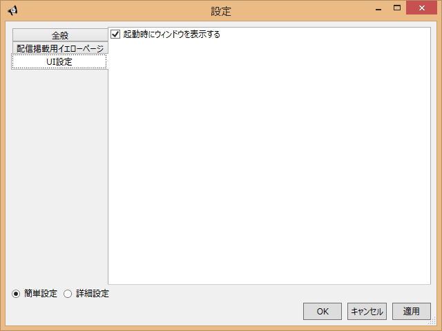
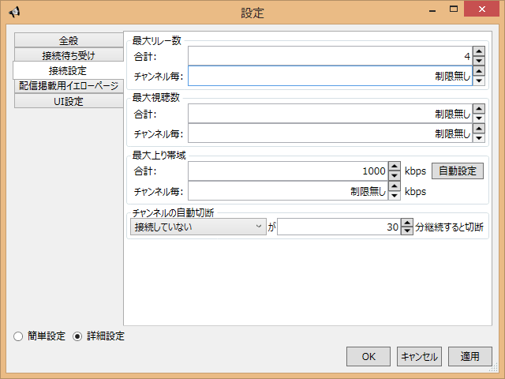

設定 - GUI編
メニューからツール(T)→設定(S)を選択すると出る設定画面で各種設定を編集することができます。

左下の詳細設定を選択するとあまり使わない設定項目が表示されます。 普通は簡単設定だけで十分です。
左のタブでカテゴリを選んで設定してください。
全般
基本的な設定を集めたカテゴリです。
接続待ち受け
ポート番号には外からのリレー接続やプレイヤーの視聴接続を待ち受けるポート番号を指定します。 通常は既定値(7144)で問題ありません。
ポート自動開放を有効にすると、設定したポートに外から接続できるように自動的にルータへポートの開放を設定します。UPnPやNAT-PMPに対応したルータがある場合のみ効果があります。 開放されたポートはPeerCastStationが起動中のみ有効で、終了時には開放設定は削除されます。
外部アドレスにはルータの外部アドレスが表示されます。ポート自動開放が無効の場合や、UPnPやNAT-PMPに対応したルータが見つからない場合にはルーター未発見と表示されます。ポートの自動開放を有効にしてもポートが開放されない場合は、ここがルーター未発見になっていないか確認してください。ルーター未発見の場合はルータがUPnPやNAT-PMPに対応していないかルータのUPnP/NAT-PMP機能が無効になってる可能性があります。
ポート開放状態には、指定したポートに外から接続できるかの状態が表示されます。 起動時は未確認になっていますので、確認する場合は開放確認ボタンを押してください。 ポート開放状態は現在の状態を確認するだけなので、ポート開放ができてるとわかっていれば開放確認を毎回行う必要はありません。
ポート開放状態には以下のいずれかが表示されます。
| 未確認 | 開放状態の確認をしていない状態です |
| 確認しています | 開放確認中です。通常は数秒で結果が表示されます |
| 開放されています | 外部から指定のポートにリレー接続ができる状態です |
| 未開放です | 外部から指定のポートへのリレー接続ができない状態です。ルータやファイアウォールの設定などを確認してください |
| 確認失敗しました | 開放確認サーバとの通信が失敗した状態です。PeerCastStation.configが無いと失敗したりします。少し時間をおいてから試してみてください。それでも失敗したら諦めよう。 |
ポート番号を変更して開放確認を行う場合は、ポート番号を変更したあと適用ボタンを押してからポート開放確認ボタンを押してください。一度適用を押さないと変更前のポート番号に対し開放確認を行ってしまいます。
最大上り帯域
リレーに使える帯域をkbps単位で設定します。初期値は0ですが、このままではリレーが一切できないので正しく設定してください。 また、実際に使える以上の帯域を設定すると、リレーが安定せず下についた人が正しく視聴できなくなるので、無理に大き目に設定するのは絶対にやめてください。
合計にはPeerCastStation全体で使える帯域を指定します。自動設定ボタンを押すと2MB程通信して使える帯域を計測し、最適値を設定します。基本的には自動設定で問題ありませんが、絞りたい場合は手動で下げてください。自動設定より上げるのはやらないでください。
チャンネル毎にはリレーしているチャンネル一つが使える帯域を設定します。通常は制限無しでかまいません。複数のチャンネルをリレーしたいが一つのチャンネルで帯域を使いきると困る場合に設定してください。合計を上回る値を設定しても合計で制限がかかるので意味はありません。0を指定すると制限無しになります。
合計の方は0を指定しても制限無しではなく0になります。
チャンネル自動切断
一度受信したチャンネルは視聴が終わってもチャンネル一覧に残り、正しく接続されていればリレーも行われます。 自動切断を指定すると視聴やリレーが終わったチャンネルを自動的に切断し、チャンネル一覧から削除します。
条件には次のいずれかを指定します。
| 自動切断しない | 自動切断は行いません |
| 接続していない | ERRORやIDLEなどの、受信を行っていない状態のチャンネルを切断します |
| 視聴・リレーをしていない | 受信はしているが視聴もリレーもしていない状態のチャンネルを切断します。受信をしていないチャンネルも切断します。 |
| 視聴をしていない | 視聴していない状態のチャンネルをリレーをしていても切断します。受信をしていないチャンネルも切断します。 |
時間には指定した条件が何分間継続した場合に切断するかを設定します。あまり短くするといつの間にか切断されていたりするので適度な値に設定してください。
自分で配信しているチャンネルに対してはチャンネル自動切断は効きません。
イエローページ
自分で配信をする際に掲載するイエローページや、YPブラウザでチャンネルを取得するイエローページを設定します。 配信開始時には、ここで設定したイエローページの中からどこに掲載するか選択することになります。

初期状態では空なので左下にある追加ボタンで追加してください。 項目を選択して削除ボタンを押すと消えます。
YellowPage名には選択する際の名前を指定します。自分でわかりやすい名前を適当に設定してください。
掲載用URLにはイエローページへの掲載用アドレスを設定します。http://で始まるイエローページのアドレスではなく、掲載用のアドレスであることに注意してください。 yp.example.comやyp.example.com:7146のような形式で入力してください。勝手にpcp://yp.example.com:7146/のような形に修正されますのでそれで問題ありません。
掲載用のアドレスはイエローページ毎に異なるので、各イエローページに従って設定してください。
チャンネル一覧URLにはYPブラウザで使用するチャンネル一覧(index.txt)のURLを指定します。 チャンネル一覧URLはYP毎に異なりますが、一般的にはWebブラウザでYPを見たときのURLにindex.txtをくっつけた物になります(例:http://example.com/index.txt)。 詳しくは各YPの説明を見てください。
掲載用URLやチャンネル一覧URLはどちらかだけ設定することも可能です。必要ない欄は空欄にしておいてください。
UI設定
画面表示に関する設定をします。

起動時にウィンドウを表示するにチェックが入った状態では、PeerCastStationが起動する度にウィンドウが表示されます。オフにすると次回起動以降はウィンドウが表示されないので、必要な場合はステータスアイコンから表示させてください。
接続待ち受け
左下の詳細設定を選択すると出てくる画面です。 2つ以上の接続待ち受け設定ができます。

初期状態では全般設定で設定したポートが一つ表示されています。 追加を押すと待ち受けをしているポートを追加することができます。
| アドレス | 接続待ち受けをするアドレスを指定します。通常IPv4 Anyのままで大丈夫です。特定のインターフェースでのみ待ち受けをする場合はアドレスを指定してください。IPv6アドレスも指定できますが現状では無意味です。 |
| ポート | 追加する接続待ち受けポート番号を指定します。 |
| LAN内からの接続を許可 | このポートにLAN内から接続された時に許可する操作を指定します。 リレーはリレー接続の受け付けを許可、視聴は直接視聴接続の受け付けを許可、操作はHTML UIへの接続など操作系への受け付けを許可します。要認証を有効にすると操作と視聴のアクセスがされた場合にIDとパスワードの入力を要求します。通常は要認証以外全部ONで大丈夫です。 |
| WANからの接続を許可 | このポートに外部ネットワークから接続された時に許可する操作を指定します。 リレーはリレー接続の受け付けを許可、視聴は直接視聴接続の受け付けを許可、操作はHTML UIへの接続など操作系への受け付けを許可します。通常はリレーのみONにしておいてください。要認証を有効にすると操作と視聴のアクセスがされた場合にIDとパスワードの入力を要求します。操作や視聴をONにする場合は要認証もONにすることをおすすめします。 |
| 認証ID・認証パスワード | 要認証をONの状態でHTML UIへのアクセスや視聴をしようとした際に求められるIDとパスワードを表します。安全のため自動生成のみになっています。再生成ボタンを押すとIDとパスワードを生成しなおします。 |
| ポート開放状態 | このポートに外部から接続できるかの状態を表しています。右下の開放確認ボタンを押すと更新されます。 |
ポート自動開放を有効にすると、設定したポートに外から接続できるように自動的にルータへポートの開放を設定します。UPnPやNAT-PMPに対応したルータがある場合のみ効果があります。 この時に開放が設定されるポートはWANからの接続を許可が1つでも有効になっているポートのみです。 開放されたポートはPeerCastStationが起動中のみ有効で、終了時には開放設定は削除されます。
外部アドレスにはルータの外部アドレスが表示されます。ポート自動開放が無効の場合や、UPnPやNAT-PMPに対応したルータが見つからない場合にはルーター未発見と表示されます。ポートの自動開放を有効にしてもポートが開放されない場合は、ここがルーター未発見になっていないか確認してください。ルーター未発見の場合はルータがUPnPやNAT-PMPに対応していないかルータのUPnP/NAT-PMP機能が無効になってる可能性があります。
ポート開放状態および開放確認は、全般の画面にあったものと同様の動作をします。 ポート開放状態には以下のいずれかが表示されます。
| 未確認 | 開放状態の確認をしていない状態です |
| 確認しています | 開放確認中です。通常は数秒で結果が表示されます |
| 開放されています | 外部から指定のポートにリレー接続ができる状態です |
| 未開放です | 外部から指定のポートへのリレー接続ができない状態です。ルータやファイアウォールの設定などを確認してください |
| 確認失敗しました | 開放確認サーバとの通信が失敗した状態です。PeerCastStation.configが無いと失敗したりします。少し時間をおいてから試してみてください。それでも失敗したら諦めよう。 |
ポート番号を変更したり追加・削除をして開放確認を行う場合は、変更したあと適用ボタンを押してからポート開放確認ボタンを押してください。一度適用を押さないと変更前のポート番号に対し開放確認を行ってしまいます。
開放確認は外部からのリレー接続ができるかを確認するためのものですので、WANからのリレー接続が許可されていないポートに対してはポート開放確認は行われません。
接続数設定
左下の詳細設定を選択すると出てくる画面です。 最大接続数などの設定を変更することができます。

最大リレー数
チャンネルのリレー本数制限を指定します。0を設定すると制限無しになります。通常は制限無しで問題ありません。 基本的には最大上り帯域で制限をかける方を推奨しますが、さらに細かい制御をしたい場合に設定してください。
合計はPeerCastStation全体で許可する最大リレー本数を指定します。0を設定すると制限無しになります。最大上り帯域を指定すれば足りるので設定する必要はないでしょう。
チャンネル毎は一つのチャンネルに対する最大リレー本数を指定します。0を設定すると制限無しになります。特定のチャンネルでリレーが埋まるのを回避したい場合に使用することができますが、たいていはチャンネル毎の最大上り帯域を設定すれば足ります。
最大視聴数
WANからの視聴用接続の最大本数を指定します。 LAN内からの視聴接続には制限はかかりません。 WANからの直接視聴接続を許可している場合に設定してください。
合計にはPeerCastStation全体で許可する最大直接視聴数を指定します。0を設定すると制限無しになります。通常、視聴はLAN内のみなので制限無しで問題ありません。 WANからの視聴の場合にのみ有効ですが、その場合は最大上り帯域の制限もかかります。上り帯域を視聴のみで潰すと困る場合などに使用してください。
チャンネル毎にはチャンネル毎に許可する最大直接視聴数を指定します。0を設定すると制限無しになります。 こちらもWANからの視聴の場合にのみ有効で、最大上り帯域の制限もかかります。通常は制限無しで問題ないと思います。
最大上り帯域
リレーに使える帯域をkbps単位で設定します。初期値は0ですが、このままではリレーが一切できないので正しく設定してください。 また、実際に使える以上の帯域を設定すると、リレーが安定せず下についた人が正しく視聴できなくなるので、無理に大き目に設定するのは絶対にやめてください。
合計にはPeerCastStation全体で使える帯域を指定します。自動設定ボタンを押すと2MB程通信して使える帯域を計測し、最適値を設定します。基本的には自動設定で問題ありませんが、絞りたい場合は手動で下げてください。自動設定より上げるのはやらないでください。
チャンネル毎にはリレーしているチャンネル一つが使える帯域を設定します。通常は制限無しでかまいません。複数のチャンネルをリレーしたいが一つのチャンネルで帯域を使いきると困る場合に設定してください。合計を上回る値を設定しても合計で制限がかかるので意味はありません。0を指定すると制限無しになります。
合計の方は0を指定しても制限無しではなく0になります。
チャンネル自動切断
一度受信したチャンネルは視聴が終わってもチャンネル一覧に残り、正しく接続されていればリレーも行われます。 自動切断を指定すると視聴やリレーが終わったチャンネルを自動的に切断し、チャンネル一覧から削除します。
条件には次のいずれかを指定します。
| 自動切断しない | 自動切断は行いません |
| 接続していない | ERRORやIDLEなどの、受信を行っていない状態のチャンネルを切断します |
| 視聴・リレーをしていない | 受信はしているが視聴もリレーもしていない状態のチャンネルを切断します。受信をしていないチャンネルも切断します。 |
| 視聴をしていない | 視聴していない状態のチャンネルをリレーをしていても切断します。受信をしていないチャンネルも切断します。 |
時間には指定した条件が何分間継続した場合に切断するかを設定します。あまり短くするといつの間にか切断されていたりするので適度な値に設定してください。
自分で配信しているチャンネルに対してはチャンネル自動切断は効きません。
設定 - HTML UI編
ナビゲーションの設定リンクから各種設定のページを開きます。

それぞれの設定方法はGUI編とだいたい同じなので上を見てください。